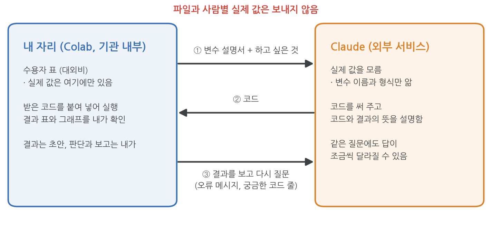
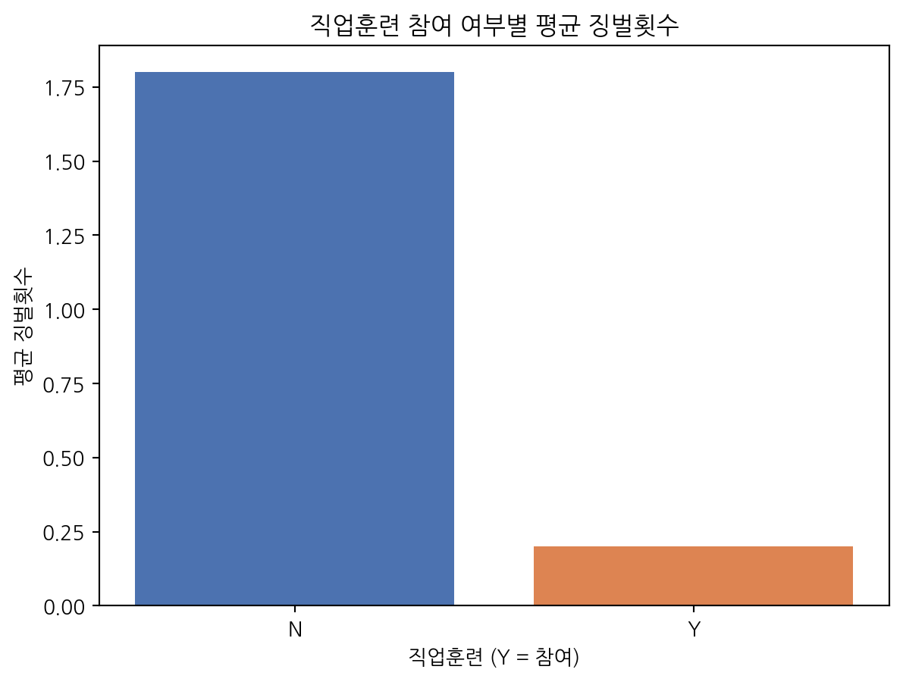
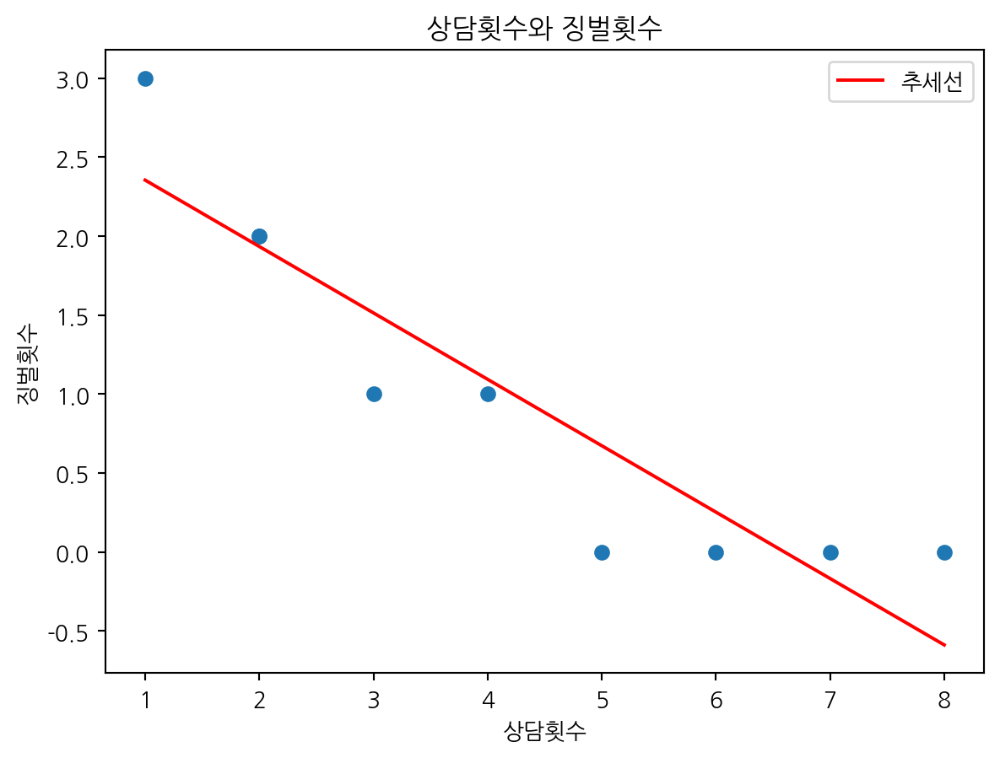
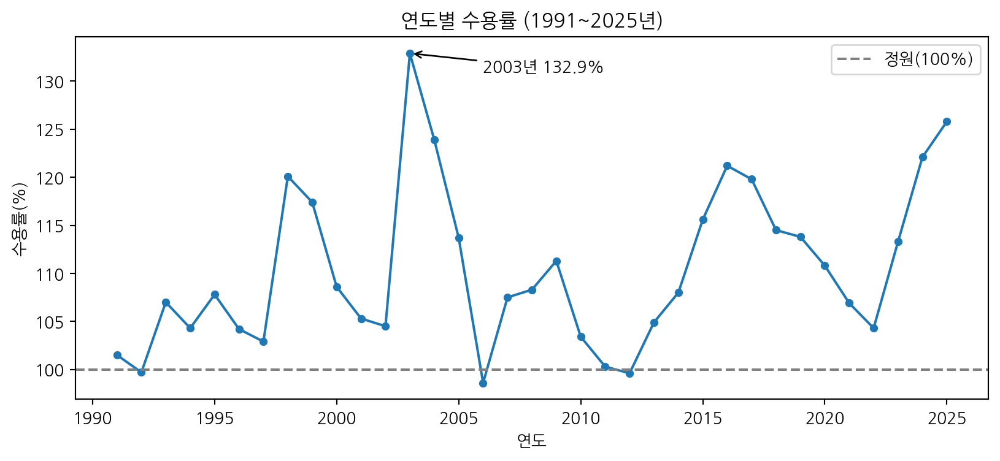
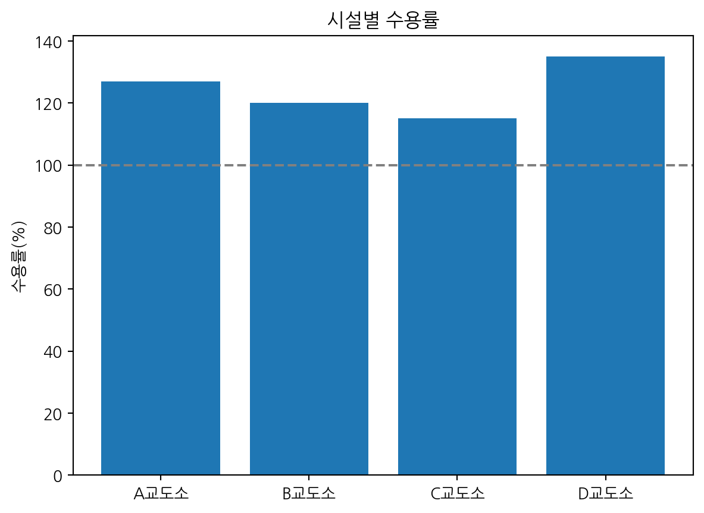

!apt-get -qq install -y fonts-nanum > /dev/null5. AI와 함께 분석하기
이 장은 한 가지 상황을 가정합니다. 여러분 손에 교정시설 내부 자료가 있고, 대외비라서 파일을 AI에 올릴 수 없습니다. 그래도 AI의 도움을 받아 분석하고 그래프를 그릴 수 있습니다. 데이터는 Colab에만 두고, AI에게는 어떤 변수가 있고 무엇을 보고 싶은지만 말합니다. AI가 코드를 써 주면 Colab에서 실행하고, 결과를 보고 다시 묻습니다.
시연은 Claude(claude.ai)로 합니다. ChatGPT, Gemini 같은 다른 AI도 같은 방법으로 쓸 수 있습니다.
이 장의 흐름은 다음과 같습니다.
- 파일을 올릴 수 없는 상황 정리하기 (5.2)
- 변수 설명서 만들기 (5.3)
- 하고 싶은 것을 요청문으로 쓰기 (5.4)
- 시연: 4장, 6장의 분석을 AI와 함께 다시 해 보기 (5.5~5.7)
- 받은 코드와 결과 확인하기 (5.8)
- 실습 과제 (5.9)
5.1 준비
시연에서 그래프를 그리므로 한글 글꼴을 먼저 설치합니다.
import pandas as pd
import matplotlib.pyplot as plt
from matplotlib import font_manager as fm
fm.fontManager.addfont("/usr/share/fonts/truetype/nanum/NanumGothic.ttf")
plt.rcParams["font.family"] = "NanumGothic"
plt.rcParams["axes.unicode_minus"] = False
주소 = "https://raw.githubusercontent.com/StatJeong/moj-python-lecture/main/data/"
수용자 = pd.read_csv(주소 + "inmates.csv")
시설현황 = pd.read_csv(주소 + "facilities.csv")5.2 파일을 올릴 수 없는 데이터
중요이 장의 가정
이 장의 수용자 표는 강의용 가상 자료입니다. 하지만 지금부터는 외부에 보낼 수 없는 실제 내부 자료라고 생각하고 다룹니다.
판단 기준은 한 줄로 정리할 수 있습니다. 기관 밖 사람에게 보여 줄 수 없는 자료라면, 외부 AI에도 넣지 않습니다. 영국 정부 데이터 분석가 지침이 쓰는 기준이고(GOV.UK), 국가정보원(보도)과 행정안전부(정책브리핑)의 생성형 AI 지침(2023)도 비공개 자료와 개인정보를 입력하지 말라고 정하고 있습니다.
그러면 무엇을 AI에게 보낼 수 있을까요? 데이터 자체가 아니라 데이터의 모양입니다.
| AI에게 보내도 되는 것 | 보내지 않는 것 |
|---|---|
| 열 이름, 자료형(숫자/문자/날짜) | 파일 자체 (CSV, 엑셀) |
| 값의 형식 (예: 날짜는 “2025-03-12” 꼴, 처우급은 S1~S4) | 실제 행의 값, head() 출력 |
| 지어낸 예시 값 | 수용번호, 이름, 상담 내용 |
| 하고 싶은 분석과 그래프 모양 | 사람 단위로 나뉜 결과 표 |
| 오류 메시지, 궁금한 코드 줄 | 보고서 원문 |

노트AI 설정에서 ’학습에 쓰지 않음’을 골라도
Claude는 2025년 8월부터 대화를 모델 학습에 쓸지 사용자가 고르게 바꾸었습니다(Anthropic). 학습에 쓰지 않도록 골라도 대화 내용은 외부 회사 서버로 전송됩니다. 그래서 설정과 관계없이 내부 자료는 보내지 않습니다.
5.3 변수 설명서 만들기
AI에게 보낼 변수 설명서를 만듭니다. 먼저 Colab에서 열 이름과 자료형을 확인합니다. 이 출력에는 실제 값이 없습니다.
print(수용자.dtypes)수용번호 int64
시설 object
성별 object
나이 int64
죄명 object
형기_개월 int64
입소일 object
경비처우급 object
직업훈련 object
상담횟수 float64
징벌횟수 int64
최근상담메모 object
dtype: object이 목록을 바탕으로, 각 변수가 무엇이고 값이 어떤 모양인지 사람이 적습니다. 값의 모양은 실제 값을 옮기지 말고 형식만 적거나 지어낸 예시로 씁니다. 처음 보는 사람에게 표를 설명하듯 쓰면 됩니다.
[데이터 설명]
표 이름은 수용자이고, pandas 데이터프레임으로 Google Colab에 이미 읽어 두었어.
내부 자료라서 실제 값은 보낼 수 없고, 변수 구성만 알려 줄게. 10행이야.
- 수용번호: 정수. 사람마다 다른 번호
- 시설: 문자. "A교도소" 같은 형식, 3종류
- 성별: 문자. "남" 또는 "여"
- 나이: 정수
- 죄명: 문자. 절도, 사기, 폭력 같은 값
- 형기_개월: 정수. 형기를 개월로 적은 값
- 입소일: 문자. "2025-03-12" 형식
- 경비처우급: 문자. S1, S2, S3, S4 중 하나
- 직업훈련: 문자. 참여했으면 "Y", 아니면 "N"
- 상담횟수: 숫자. 빈칸이 있음
- 징벌횟수: 정수
- 최근상담메모: 문자. 분석에 쓰지 않음
힌트설명서에 꼭 넣을 것
- 열 이름은 표에 있는 그대로 씁니다. 띄어쓰기나 밑줄 하나가 달라도 코드가 오류를 냅니다.
- 빈칸이 있는 열은 빈칸이 있다고 적습니다. 그래야 AI가 빈칸 처리 방법을 함께 정합니다.
- “Y/N”, “S1~S4”처럼 값이 정해진 열은 가능한 값을 적습니다.
이 설명서는 한 번 만들어 두면 이후 요청마다 맨 앞에 붙여 넣어 씁니다.
5.4 요청문 쓰기: 하고 싶은 것을 말하기
AI를 우리 업무를 전혀 모르는 유능한 신입 직원이라고 생각하면 요청문을 쓰기 쉽습니다. 신입에게 일을 맡길 때처럼 상황, 자료, 원하는 결과, 조건을 말해 줍니다(Anthropic 요청문 작성 안내). 무엇을 왜 하려는지도 함께 말하면 더 맞는 답이 옵니다.
[나와 상황]
나는 파이썬을 처음 배우는 교정공무원이고, 과장님께 보고할 자료를 만들고 있어.
[데이터 설명]
(5.3절의 설명서를 붙여 넣기)
[하고 싶은 것]
(무엇을 알고 싶은지, 어떤 표나 그래프로 보고 싶은지)
[조건]
- Google Colab에서 실행할 거야. 한글 글꼴(NanumGothic)은 이미 설정해 두었어.
- 코드 각 줄 위에 한국어 주석을 달아 줘.
- 데이터는 내가 Colab에서 실행할 테니 코드만 줘. 가짜 데이터를 만들어 실행하지는 마.
- 설명서에 없는 열은 만들거나 가정하지 마.
- 애매한 부분이 있으면 코드를 쓰기 전에 먼저 질문해 줘.[조건]의 마지막 세 줄은 여러 데이터 분석 안내 글이 공통으로 권하는 문장입니다. 설명서에 없는 열을 AI가 지어내거나(Technofile), 말하지 않은 기준을 혼자 정하는 일을 줄여 줍니다(Online Journalism Blog).
힌트무엇을 물어야 할지 모를 때
하고 싶은 것이 아직 막연하면, 설명서를 붙여 넣은 뒤 이렇게 물어봅니다(Jeff Su).
- “이 변수들로 알아볼 수 있는 질문을 다섯 개 제안해 줘. 각각 어떤 열이 필요한지도.”
- “이 데이터로는 답할 수 없는 질문은 뭐가 있어?”
두 번째 질문이 중요합니다. 예를 들어 이 표에는 출소 후 기록이 없으므로 재범에 대한 질문에는 답할 수 없습니다.
5.5 시연 1: 두 집단 비교하기
4장 4.4절의 분석을 AI와 함께 다시 해 봅니다. 하고 싶은 것만 말합니다.
[하고 싶은 것]
직업훈련에 참여한 사람과 참여하지 않은 사람의 징벌횟수가 다른지 보고 싶어.
- 두 집단의 인원과 평균 징벌횟수를 표로 보여 줘.
- 막대그래프로도 그려 줘.
- 두 평균의 차이가 우연으로 생길 만한 차이인지도 확인하고 싶어.아래는 이 요청문(앞에 상황, 설명서, 조건을 붙인 것)에 Claude가 준 코드의 한 예입니다. 같은 요청에도 답은 대화마다 조금씩 다릅니다.
from scipy import stats
# 직업훈련(Y/N)별로 인원과 평균 징벌횟수 구하기
요약 = 수용자.groupby("직업훈련")["징벌횟수"].agg(["count", "mean"])
요약.columns = ["인원", "평균 징벌횟수"]
print(요약)
# 막대그래프
plt.bar(요약.index, 요약["평균 징벌횟수"], color=["#4C72B0", "#DD8452"])
plt.title("직업훈련 참여 여부별 평균 징벌횟수")
plt.xlabel("직업훈련 (Y = 참여)")
plt.ylabel("평균 징벌횟수")
plt.show()
# 두 집단의 평균 차이 검정 (Welch t-검정)
참여 = 수용자[수용자["직업훈련"] == "Y"]["징벌횟수"]
비참여 = 수용자[수용자["직업훈련"] == "N"]["징벌횟수"]
결과 = stats.ttest_ind(참여, 비참여, equal_var=False)
print("t값:", round(결과.statistic, 2), " p값:", round(결과.pvalue, 3)) 인원 평균 징벌횟수
직업훈련
N 5 1.8
Y 5 0.2
t값: -3.77 p값: 0.0094장 4.4절과 같은 결과(t = -3.77, p = 0.009)가 나왔는지 먼저 확인합니다. 다른 방법으로 이미 구한 값과 맞춰 보는 것이 가장 쉬운 검산입니다.
결과를 보고 다시 묻기
참여 집단의 징벌이 훨씬 적게 나왔습니다. 이것을 보고서에 어떻게 쓸지 묻습니다. 숫자는 보내지 않고 모양만 말합니다.
직업훈련 참여 집단의 평균 징벌횟수가 비참여 집단보다 훨씬 낮고, p값도 0.05보다 작게 나왔어.
보고서에 "직업훈련이 징벌을 줄인다"라고 써도 될까?
의심 많은 분석가 입장에서 검토해 주고, 확인에 필요한 코드가 있으면 줘.이렇게 ‘의심 많은 분석가’ 역할을 맡기면 AI가 결과의 허점을 찾는 쪽으로 답합니다(Online Journalism Blog). 답에 ’두 집단에서 함께 달라지는 다른 변수’를 확인하라는 말이 없으면 직접 묻습니다. “경비처우급도 두 집단에서 다른지 확인하는 코드를 줘.” 아래는 그때 받은 코드의 한 예입니다.
# 직업훈련 참여 여부와 경비처우급의 교차표
pd.crosstab(수용자["직업훈련"], 수용자["경비처우급"], margins=True)| 경비처우급 | S1 | S2 | S3 | S4 | All |
|---|---|---|---|---|---|
| 직업훈련 | |||||
| N | 0 | 0 | 3 | 2 | 5 |
| Y | 1 | 3 | 1 | 0 | 5 |
| All | 1 | 3 | 4 | 2 | 10 |
직업훈련 참여자 5명 가운데 4명이 S1·S2급이고, 비참여자 5명은 모두 S3·S4급입니다. 징벌이 적은 이유가 직업훈련 때문인지, 원래 처우급이 낮은(모범적인) 사람들이 직업훈련에 들어갔기 때문인지 이 표로는 가를 수 없습니다. 보고 문장은 사람이 정합니다.
직업훈련 참여자의 평균 징벌횟수가 비참여자보다 낮았다. 다만 참여자 대부분이 S1·S2급이어서, 이 차이를 직업훈련의 효과로 보기는 어렵다.
5.6 시연 2: 두 변수의 관계와 추세선
4장 4.5절의 산점도와 회귀직선을 AI에게 요청합니다.
[하고 싶은 것]
상담을 많이 받은 사람일수록 징벌이 적은지 보고 싶어.
- 상담횟수를 가로축, 징벌횟수를 세로축으로 점을 찍어 줘.
- 추세선(직선)을 그리고, 그 직선의 식도 알려 줘.
- 계산에 몇 명이 쓰였는지도 출력해 줘.Claude가 준 코드의 한 예입니다.
import numpy as np
# 상담횟수가 빈 행은 추세선 계산에서 뺌
자료 = 수용자.dropna(subset=["상담횟수"])
print("계산에 쓴 인원:", len(자료), "명")
# 1차식(직선) 맞추기: 기울기와 절편
기울기, 절편 = np.polyfit(자료["상담횟수"], 자료["징벌횟수"], 1)
print(f"추세선: 징벌횟수 = {절편:.2f} + ({기울기:.2f}) × 상담횟수")
# 산점도와 추세선
plt.scatter(자료["상담횟수"], 자료["징벌횟수"])
x = np.array([자료["상담횟수"].min(), 자료["상담횟수"].max()])
plt.plot(x, 절편 + 기울기 * x, color="red", label="추세선")
plt.title("상담횟수와 징벌횟수")
plt.xlabel("상담횟수")
plt.ylabel("징벌횟수")
plt.legend()
plt.show()계산에 쓴 인원: 9 명
추세선: 징벌횟수 = 2.78 + (-0.42) × 상담횟수
4장에서는 statsmodels로, 여기서는 np.polyfit으로 구했지만 절편 2.78, 기울기 -0.42로 같습니다. 코드는 달라도 같은 최소제곱 직선입니다.
처음 보는 코드 줄 묻기
np.polyfit처럼 처음 보는 함수가 나오면 그 줄만 복사해 묻습니다.
아래 줄이 무슨 일을 하는지, 마지막의 1은 무슨 뜻인지 쉬운 말로 설명해 줘.
기울기, 절편 = np.polyfit(자료["상담횟수"], 자료["징벌횟수"], 1)결과의 뜻도 묻습니다. “기울기 -0.42를 보고서에 어떻게 쓰면 돼?”라고 물어 “상담이 1회 많을수록 징벌이 평균 0.42회 적다” 같은 문장을 받습니다. 답에 9명 자료라는 점과 인과관계가 아니라는 단서가 빠져 있으면 사람이 붙입니다. 상담횟수가 빈 1007번이 계산에서 빠졌다는 것도 보고서에 적습니다.
5.7 시연 3: 연도별 추이 그래프
6장에서 쓰는 교정통계연보의 수용 현황 표(1991~2025년)를 공개 전 내부 자료라고 가정합니다. 이번에도 변수 설명과 하고 싶은 것만 보냅니다.
수용 = pd.read_csv(주소 + "yearbook/capacity_1991_2025.csv")
print(수용.dtypes)연도 int64
수용정원 int64
1일평균수용인원 int64
수용률 float64
dtype: object[데이터 설명]
표 이름은 수용이고, Colab에 읽어 두었어. 35행(1991~2025년, 1년에 한 행).
- 연도: 정수
- 수용정원: 정수. 그해 교정시설 정원 합계
- 1일평균수용인원: 정수
- 수용률: 소수. 1일평균수용인원 ÷ 수용정원 × 100
[하고 싶은 것]
35년 동안 수용률이 어떻게 변했는지 꺾은선 그래프로 보고 싶어.
- 100% 위치에 가로선을 그어 정원을 넘은 해가 보이게 해 줘.
- 수용률이 가장 높았던 해를 그래프에 표시해 줘.Claude가 준 코드의 한 예입니다.
# 수용률 꺾은선
plt.figure(figsize=(10, 4))
plt.plot(수용["연도"], 수용["수용률"], marker="o", markersize=4)
# 100% 기준선
plt.axhline(100, color="gray", linestyle="--", label="정원(100%)")
# 수용률이 가장 높았던 해 표시
최고 = 수용.loc[수용["수용률"].idxmax()]
plt.annotate(f"{int(최고['연도'])}년 {최고['수용률']}%",
xy=(최고["연도"], 최고["수용률"]),
xytext=(최고["연도"] + 3, 최고["수용률"] - 2),
arrowprops=dict(arrowstyle="->"))
plt.title("연도별 수용률 (1991~2025년)")
plt.xlabel("연도")
plt.ylabel("수용률(%)")
plt.legend()
plt.show()
그래프에서 2003년이 132.9%로 가장 높고, 1992, 2006, 2012년만 100%보다 낮습니다.
AI가 모르는 것은 사람이 채우기
2003년에 갑자기 오른 이유를 Claude에게 물으면 그럴듯한 추측을 내놓을 수 있습니다. 하지만 Claude는 이 표의 실제 값도, 교정 행정의 사정도 모릅니다. 실제 이유는 2002년 말 수용 정원을 계산하는 1인당 면적 기준이 바뀐 것입니다(6장 6.3절). 이런 업무 지식은 자료를 다루는 사람이 압니다. AI의 설명은 확인할 가설로만 받습니다.
이 표는 6장에서 직접 다시 분석합니다.
5.8 받은 코드와 결과 확인하기
AI가 준 표와 그래프는 검토 전의 초안입니다(potato-ai). 보고에 쓰기 전에 아래를 확인합니다.
| 확인할 것 | 방법 |
|---|---|
| 코드가 실행되는가 | 오류가 나면 오류 메시지 전체를 그대로 복사해 AI에게 묻습니다 |
| 없는 열을 쓰지 않았는가 | 코드에 나온 열 이름을 설명서와 대조합니다 |
| 몇 명(몇 행)으로 계산했는가 | len()이나 count로 행 수를 출력하게 합니다. 빈칸이 빠지면 숫자가 줄어듭니다 |
| ‘평균’, ‘가장 큰’ 같은 말을 어떻게 계산했는가 | 어느 열을 기준으로 했는지, 같은 값이 여럿인지 묻습니다 |
| 숫자가 맞는가 | 한두 개를 손이나 다른 방법으로 다시 계산합니다 (시연 1, 2에서 4장 결과와 대조) |
| 그래프가 맞는가 | 축 이름, 단위, 제목이 실제 내용과 맞는지 봅니다 |
| 해석이 지나치지 않은가 | 원인을 단정하는 표현(“~때문에”, “~를 줄인다”)이 없는지 봅니다 |
확인할 때 쓰는 질문 예시입니다.
- “이 코드에서 빈칸(결측치)은 어떻게 처리돼?”
- “3번째 줄의 groupby는 무슨 일을 해?”
- “결과가 맞는지 내가 손으로 확인하려면 어떻게 하면 돼?”
- “같은 결과를 다른 방법으로도 구할 수 있어?”
- “네 코드를 다시 검토해서 놓친 부분이 있으면 알려 줘.”
경고오류 없이 실행돼도 틀릴 수 있습니다
4장 4.7절의 완전 분리처럼 코드는 끝까지 실행되는데 결과는 믿을 수 없는 경우가 있습니다. 경고 메시지가 나오거나 숫자가 비정상적으로 크면 그대로 쓰지 말고 “이 경고는 무슨 뜻이야?”라고 묻습니다.
5.9 실습 과제
아래 과제를 AI에게 요청해 해결해 보세요. 요청문은 5.4절의 틀에 5.3절의 설명서를 붙여 씁니다. 받은 코드는 5.8절의 표로 확인합니다. 정답 보기에는 확인용 코드가 있습니다.
- 2026년 12월 1일부터 2027년 3월 10일 사이에 출소 예정인 수용자를 찾으세요. 출소예정일은 입소일에 형기_개월을 더한 날입니다. 코드를 받으면 “개월은 어떻게 더했어?”라고 물어보세요.
# AI에게 받은 코드를 붙여 넣어 실행해 보세요정답 보기
개월을 달력 기준으로 더한 결과와, 1개월을 30일로 바꿔 더한 결과를 나란히 봅니다.
입소일 = pd.to_datetime(수용자["입소일"])
달력기준 = []
for 날짜, 형기 in zip(입소일, 수용자["형기_개월"]):
달력기준.append(날짜 + pd.DateOffset(months=int(형기)))
수용자["출소_달력기준"] = 달력기준
수용자["출소_30일근사"] = 입소일 + pd.to_timedelta(수용자["형기_개월"] * 30, unit="D")
기간 = (pd.Timestamp("2026-12-01"), pd.Timestamp("2027-03-10"))
print("달력 기준:", 수용자[수용자["출소_달력기준"].between(*기간)]["수용번호"].tolist())
print("30일 근사:", 수용자[수용자["출소_30일근사"].between(*기간)]["수용번호"].tolist())달력 기준: [1007, 1009]
30일 근사: [1001, 1007, 1009]달력 기준으로는 1007, 1009번 2명입니다. 1개월을 30일로 계산하면 출소예정일이 2027년 3월 12일인 1001번이 3월 2일로 앞당겨져 들어옵니다. AI가 날짜를 어떻게 더했는지 묻지 않으면 놓치는 차이입니다.
- 시설현황 표(시설, 정원, 현원)로 시설별 수용률 막대그래프를 그리고, 네 시설 전체의 수용률도 구하세요. 설명서는 이 표에 맞게 새로 씁니다.
# AI에게 받은 코드를 붙여 넣어 실행해 보세요정답 보기
시설현황["수용률"] = 시설현황["현원"] / 시설현황["정원"] * 100
plt.bar(시설현황["시설"], 시설현황["수용률"])
plt.axhline(100, color="gray", linestyle="--")
plt.title("시설별 수용률")
plt.ylabel("수용률(%)")
plt.show()
print("시설별 수용률의 평균:", round(시설현황["수용률"].mean(), 1))
print("전체 현원 ÷ 전체 정원:", round(시설현황["현원"].sum() / 시설현황["정원"].sum() * 100, 1))
시설별 수용률의 평균: 124.2
전체 현원 ÷ 전체 정원: 122.3’전체 수용률’은 두 번째(122.3%)입니다. 첫 번째(124.2%)는 정원이 600명인 D교도소와 1,500명인 C교도소를 같은 무게로 평균 냈습니다. AI가 어느 쪽으로 계산했는지 확인합니다.
- 4.2절에서 이상한 값 세 개를 찾은
inmates_check.csv를 AI에게 설명하고, 잘못된 값을 처리하는 코드를 요청하세요. 처리한 뒤describe()를 다시 실행해 최솟값과 최댓값이 정상인지 확인합니다. AI가 값을 빈칸으로 바꾸는지, 다른 값으로 고치는지, 행을 빼는지 묻고, 방법마다 무엇이 달라지는지도 물어보세요.
# AI에게 받은 코드를 붙여 넣어 실행해 보세요정답 보기
원래 값을 알 수 없으므로 잘못된 값을 빈칸(NaN)으로 바꾸는 방법입니다.
점검 = pd.read_csv(주소 + "inmates_check.csv")
점검.loc[점검["나이"] > 100, "나이"] = np.nan
점검["형기_개월"] = 점검["형기_개월"].replace(999, np.nan)
점검.loc[점검["상담횟수"] < 0, "상담횟수"] = np.nan
점검[["나이", "형기_개월", "상담횟수"]].describe().round(2)| 나이 | 형기_개월 | 상담횟수 | |
|---|---|---|---|
| count | 9.00 | 9.00 | 8.00 |
| mean | 38.56 | 31.33 | 4.50 |
| std | 11.54 | 16.76 | 2.45 |
| min | 24.00 | 10.00 | 1.00 |
| 25% | 31.00 | 20.00 | 2.75 |
| 50% | 37.00 | 30.00 | 4.50 |
| 75% | 45.00 | 42.00 | 6.25 |
| max | 58.00 | 60.00 | 8.00 |
count가 줄어든 대신 최솟값과 최댓값이 정상 범위로 돌아옵니다. 280을 28로 고치는 것처럼 ’원래 값이 이것이었을 것’이라고 AI가 추측해 고치는 코드를 주면 그대로 쓰지 않습니다. 원래 값은 원자료를 확인해야 알 수 있습니다.
- 시연 1의 결과로 과장님께 올릴 세 문장 보고를 AI에게 요청하세요. 이때 숫자는 보내지 말고, 숫자 자리를 [ ]로 비워 둔 문장을 받으세요. 빈칸은 Colab 결과를 보고 직접 채웁니다.
직업훈련 참여 여부별 평균 징벌횟수를 비교했고, 참여 집단이 더 낮게 나왔어.
경비처우급이 두 집단에서 많이 다르다는 것도 확인했어.
과장님께 올릴 세 문장 보고를 써 줘. 숫자가 들어갈 자리는 [ ]로 비워 두고,
원인을 단정하는 표현은 쓰지 마.- 1번 과제를 함수로 만들어 달라고 요청하세요. 함수로 받아 두면 시설, 기준일, 기간처럼 바뀌는 값만 넣어 같은 분석을 반복할 수 있습니다(1장 1.9절). 요청할 때 입력, 출력, 사용 예를 적어 주면 원하는 모양의 함수를 받기 쉽습니다.
[하고 싶은 것]
아래 조건의 파이썬 함수를 만들어 줘.
- 함수 이름: 시설별출소예정
- 입력: 수용자 데이터프레임, 시설 이름, 기준일(기본값 "2026-12-01"), 개월 수(기본값 6)
- 출력: 그 시설에서 기준일부터 개월 수 안에 출소 예정인 사람의 수용번호와 출소예정일 표
- 출소예정일은 입소일에 형기_개월을 달력 기준으로 더해서 구해.
- 사용 예: 시설별출소예정(수용자, "A교도소")함수를 받으면 결과를 이미 아는 경우로 먼저 확인합니다. 시설별출소예정(수용자, "A교도소")는 1001, 1006, 1009번 3명이 나와야 합니다.
# AI에게 받은 함수를 붙여 넣어 실행해 보세요정답 보기
def 시설별출소예정(표, 시설명, 기준일="2026-12-01", 개월=6):
출소예정일 = []
for 입소일, 형기 in zip(pd.to_datetime(표["입소일"]), 표["형기_개월"]):
출소예정일.append(입소일 + pd.DateOffset(months=int(형기)))
결과 = 표.assign(출소예정일=출소예정일)
시작 = pd.Timestamp(기준일)
끝 = 시작 + pd.DateOffset(months=개월)
조건 = (결과["시설"] == 시설명) & (결과["출소예정일"] >= 시작) & (결과["출소예정일"] < 끝)
return 결과[조건][["수용번호", "출소예정일"]]
시설별출소예정(수용자, "A교도소")| 수용번호 | 출소예정일 | |
|---|---|---|
| 0 | 1001 | 2027-03-12 |
| 5 | 1006 | 2027-04-10 |
| 8 | 1009 | 2027-02-18 |
시설별출소예정(수용자, "C교도소")| 수용번호 | 출소예정일 | |
|---|---|---|
| 6 | 1007 | 2027-02-03 |
5.10 AI를 쓸 때 지킬 것
- 기관 밖 사람에게 보여 줄 수 없는 자료는 외부 AI에 넣지 않습니다. 수용자 정보, 상담 내용, 내부 통계 원자료가 여기에 해당합니다.
- AI에게는 변수 설명서와 하고 싶은 것만 보내고, 코드는 내부 환경에서 실행합니다.
- AI가 준 결과는 초안입니다. 숫자 일부를 직접 계산해 확인하고, 경고 메시지와 비정상적인 값은 그냥 넘기지 않습니다.
- 결과에 대한 판단과 보고 문장은 사람이 정하고, 책임도 사람이 집니다.
- 소속 기관의 정보보안 지침이 이 강의 내용보다 우선합니다.
노트이 장에서 참고한 글
- How to ask AI to perform data analysis (Paul Bradshaw, Online Journalism Blog): 열 이름과 계산 방법 명시, 먼저 질문하게 하기, 의심 많은 분석가 역할, 결과 검산
- Using generative AI as a spreadsheet and data cleaning assistant (Paul Bradshaw): 파일 대신 예시 값 보여 주기, 데이터를 직접 바꾸게 하지 말고 코드를 받기
- How to use ChatGPT for data analysis without technical skills (Jeff Su): 데이터로 답할 수 있는 질문과 없는 질문 찾기
- 클로드 데이터 분석 사용법 (potato-ai, 한국어): 구조 먼저 확인, 계산식 명시, 결과는 초안으로 다루기
- Using AI (영국 정부 데이터 커뮤니티): 기관 밖에 보여 줄 수 없는 자료는 AI에도 넣지 않는다는 기준
- Prompting best practices (Anthropic): 맥락과 이유를 함께 주는 요청문
한국어 자료 한 개를 빼면 모두 영어 사이트입니다.